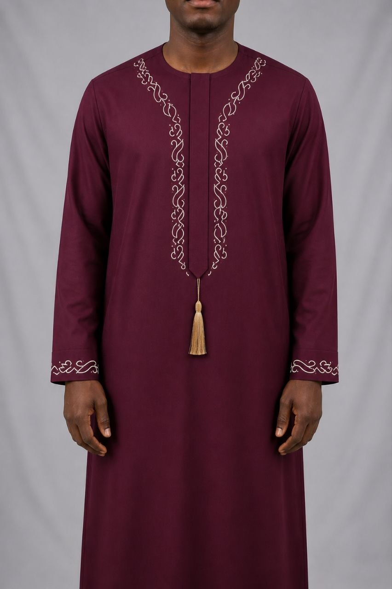

Proof piece 05 · night shift
AF 63 · NECKLINE RUN · CREAM 40WT
GOLD CORD TASSEL · HAND-TIED
CUFF RUN · MATCHED PAIR
SEVEN STAR · SOLID WOOL · WINE
KAS
THREADZ
Collection
Library
The Loom
Atelier
Move your light across the piece
Maroon Tassel Jallab · from ₦51,000
Commission a piece